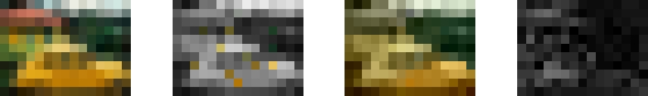
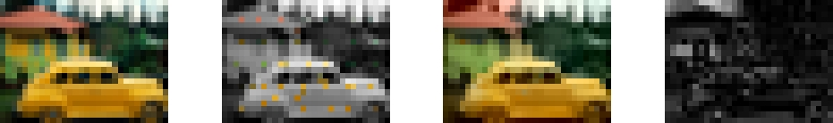
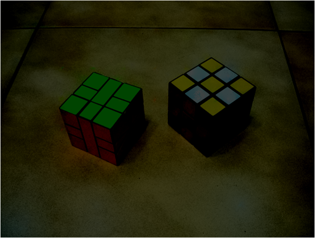

Landmark-Based Sparse Color Representations for Color Transfer
Tzu-Wei Huang and Hwann-Tzong Chen
Department of Computer Science, National Tsing Hua University
Hsinchu, Taiwan
- Abstract
- We present a novel image representation that characterizes a color image by an intensity image and a small number of color pixels. Our idea is based on solving an inverse problem of colorization: Given a color image, we seek to obtain an intensity image and a small subset of color pixels, which are called landmark pixels, so that the input color image can be recovered faithfully using the intensity image and the color cues provided by the selected landmark pixels. We develop an algorithm to derive the landmark-based sparse color representations from color images, and use the representations in the applications of color transfer and color correction. The computational cost for these applications is low owing to the sparsity of the proposed representation. The landmark-based representation is also preferable to statistics-based representations, e.g., color histograms and Gaussian mixture models, when we need to reconstruct the color image from a given representation.
- Selecting landmark pixels
- The selection of landmark pixels is done iteratively. As can be seen in the following example, the reconstruction error (depicted as the residue image) decreases during the process of selecting landmark pixels.
| Input Image Landmark Pixels Recovered Image Residue Image |
|---|
|  |
|  |
© Jim Richardson
- Effectiveness of the selected landmark pixels
- In the following example, an image of size 400x300 pixels can be recovered faithfully using only a small number of color landmarks. The difference between the original image and the recovered image from 590 landmarks is hard to perceive.
| Original image of 400x300 pixels |
Recovered image using 156 landmark pixels |
Recovered image using 590 landmark pixels |
 |
- Results of color transfer
- Given an input image and a reference image, we wish to adjust the input image’s color based on the color characteristics of the reference image. The color of each landmark pixel in the input image is modified according to the color in the reference image. We then combine the modified landmark pixels with the intensity of the input image, and perform colorization to produce the resulting color image.
| Reference image | Input image | Color transfer output |
© Jim Richardson |
© Ed Kashi |
|
| Reference image | Input image | Color transfer output |
© William Albert Allard |
© Michael Hipple |
|
| Reference image | Input image | Color transfer output |
| Reference image | Input image | Color transfer output |
| Reference image | Input image | Color transfer output |
- Results of color correction
- The color landmarks extracted from the blurry image are superimposed onto the under-exposed image. We use the enhanced intensity of the under-exposed image plus the color landmarks from the blurry image to do colorization and obtain the output image.
| Correct color but blurred | Under-exposed | Output |
|  | ||
| Correct color but blurred | Under-exposed | Output |
Last updated: 28 January 2010